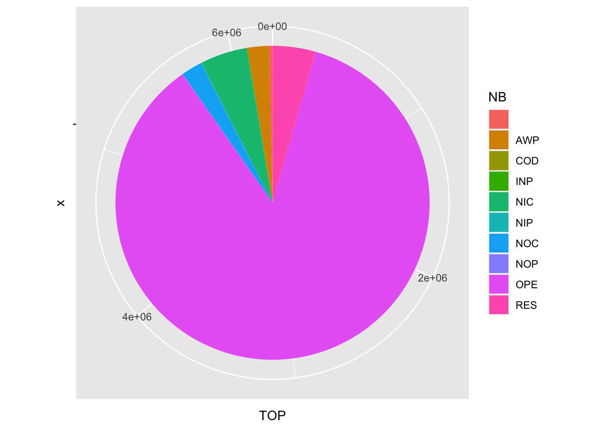
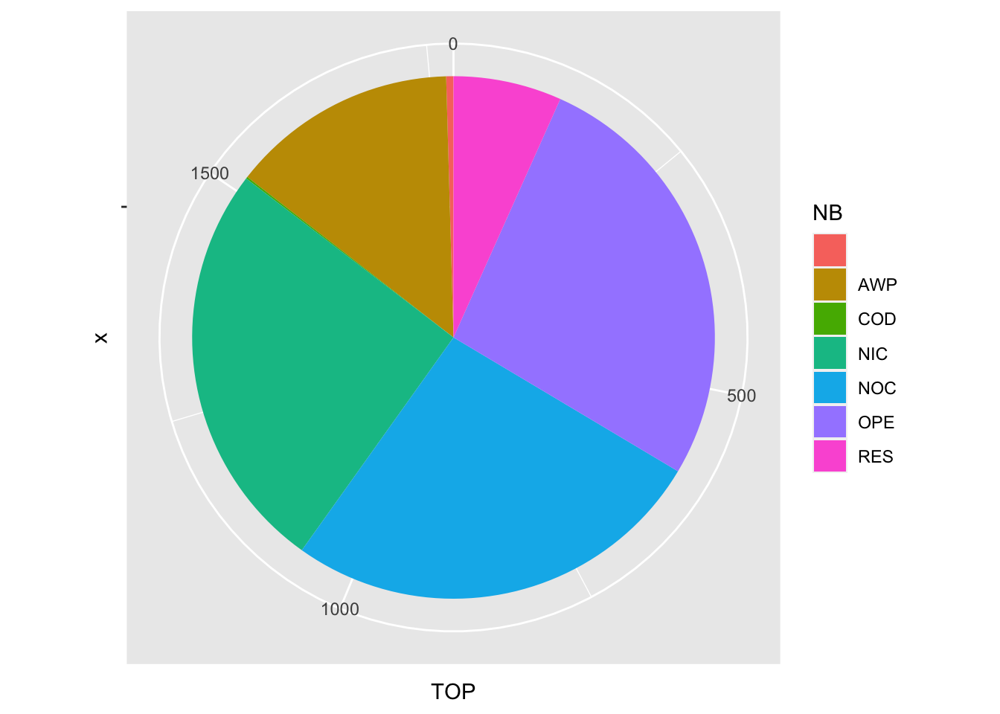
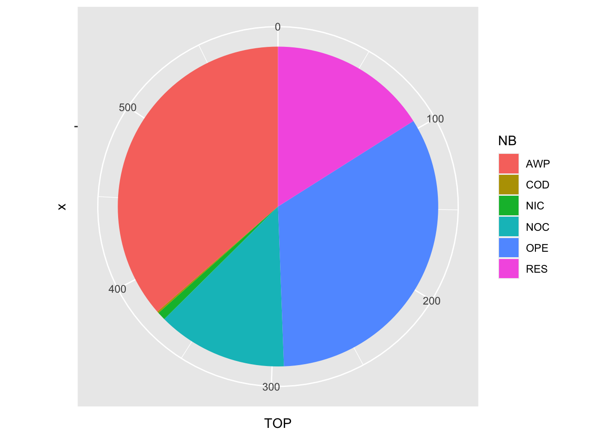
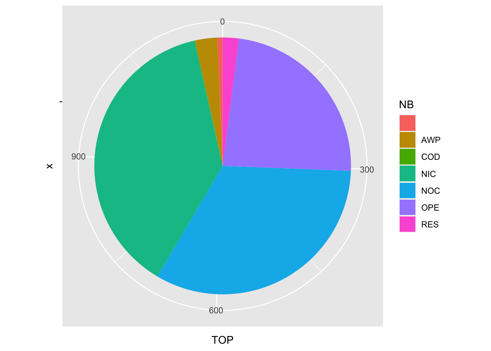

Journal de Recherche
—
Au fil de l’actualité
| De rapides enquêtes dans les bases de données des marchés publics |
|---|
| Tender Electronic Daily |
| Bulletin Officiel des Annonces des Marchés Publics |
| Données Essentielles de la Commande Publique |
—
Achat public local et préférence régionale, état des lieux
DATE : 16 juin 2021
Les campagnes des élections régionales ont cela d’intéressant que c’est à chaque fois l’occasion de reparler commande publique, et achat local. Pour un bon nombre de plateformes politiques, on voit apparaître la question de l’usage des marchés publics à des fins de redynamisation de l’activité régionale. Qu’elles prennent la forme d’un engagement vers une “préférence régionale”, ou du choix du “circuit court”, ces promesses reviennent au rythme des campagnes. Pour mémoire, en 2015, dans le Point, ces thèmes apparaîssaient déjà au coeur de la campagne… Mais que nous disent concrêtement des Données Essentielles de la Commande Publique ? rapide tour d’horizon à partir des données “enrichies” fournies par le Ministère de l’économie ici
decp_augmente$local <- ifelse(decp_augmente$libelleRegionAcheteur ==decp_augmente$libelleRegionEtablissement,1,0)
round(mean(decp_augmente$local)*100,2)## [1] 63.69Ainsi, plus de 63.69 % des marchés publics donnent lieu à un contrat à destination d’une entreprise appartenant à la même région que l’acheteur. Cette proportion dépend fortement de la nature du marché.
decp_augmente$local <- ifelse(decp_augmente$libelleRegionAcheteur ==decp_augmente$libelleRegionEtablissement,1,0)
aggregate(local~natureObjetMarche, data = decp_augmente, mean)## natureObjetMarche local
## 1 Fournitures 0.4686058
## 2 Services 0.5816647
## 3 Travaux 0.8101342Cet argument de proximité (achat dans la même région) s’observe aussi naturellement dans les distances entre acheteur et fournisseur :
aggregate(as.numeric(distanceAcheteurEtablissement)~natureObjetMarche, data = decp_augmente, mean, rm.na=TRUE)## natureObjetMarche as.numeric(distanceAcheteurEtablissement)
## 1 Fournitures 282.23794
## 2 Services 256.35286
## 3 Travaux 87.32694S’agissant des fournitures, la nature des produits joue naturellement à plein. Si l’on se concentre par exemple sur les seuls produits agricoles, de l’élevage, de la pêche, de la sylviculture et produits connexes (code CPV 03), on obtient :
aggregate(local~natureObjetMarche, data = decp_augmente[which(str_sub(decp_augmente$codeCPV_Original,1,2)=="03"),], mean, rm.na=TRUE)## natureObjetMarche local
## 1 Fournitures 0.6394389Un argument souvent lié à l’échat local est sa capacité à favoriser l’accès des PME à la commande publique, ce que semble confirmer le petit tableau suivant comparant la proportion d’achat à une PME selon que l’achat est local ou non.
decp_augmente$PMEoui <-ifelse(decp_augmente$categorieEtablissement=="PME",1,0)
aggregate(local~PMEoui, data = decp_augmente, mean, rm.na=TRUE)## PMEoui local
## 1 0 0.5507377
## 2 1 0.7155433Une analyse (statistique) un peu plus poussée est cependant nécessaire. Testons la probabilité d’attribuer un marché à une PME en fonction de plusieurs paramètres… Pour cela un petit logit est bien utile ! (attention, il s’agit d’un billet de blog, un travail économétrique bien plus consistant serait nécessaire pour tirer des conclusions scientifiquement recevables, contrôler toute une série de biais potentiels, mais ce sera l’objet peut-être d’un papier académique, pas d’un simple post !).
Commençons par calculer l’odds-ratio du simple lien “achat local” / “achat à une PME” :
model_PME1 <- glm(PMEoui ~ local ,data = decp_augmente, family = binomial)
logit_PME1.or = exp(coef(model_PME1))
library(stargazer)
stargazer(model_PME1, title="Odds Ratio", coef=list(logit_PME1.or),
ci=TRUE, ci.level=0.90, single.row=TRUE, type="text")##
## Odds Ratio
## =============================================
## Dependent variable:
## ---------------------------
## PMEoui
## ---------------------------------------------
## local 2.052*** (2.040, 2.064)
## Constant 0.693*** (0.684, 0.703)
## ---------------------------------------------
## Observations 336,042
## Log Likelihood -227,642.100
## Akaike Inf. Crit. 455,288.200
## =============================================
## Note: *p<0.1; **p<0.05; ***p<0.01Contrôlons par d’autres caractéristiques du marchés (nature du marché, choix de procédure, taille du marchés en terme de durée et de montant)
model_PME <- glm(PMEoui ~ local + natureObjetMarche + procedure+ as.numeric(montantCalcule) + as.numeric(dureeMoisCalculee) ,data = decp_augmente, family = binomial)
logit_PME.or = exp(coef(model_PME))
library(stargazer)
stargazer(model_PME, title="Odds Ratio", coef=list(logit_PME.or),
ci=TRUE, ci.level=0.90, single.row=TRUE, type="text")##
## Odds Ratio
## ==========================================================================================================
## Dependent variable:
## ---------------------------
## PMEoui
## ----------------------------------------------------------------------------------------------------------
## local 1.794*** (1.781, 1.806)
## natureObjetMarcheServices 1.141*** (1.126, 1.156)
## natureObjetMarcheTravaux 1.371*** (1.354, 1.387)
## procedureAppel d'offres ouvert 0.903*** (0.871, 0.935)
## procedureAppel d'offres restreint 1.491*** (1.409, 1.573)
## procedureDialogue compétitif 2.058*** (1.915, 2.202)
## procedureMarché négocié sans publicité ni mise en concurrence préalable 1.613*** (1.556, 1.671)
## procedureMarché passé sans publicité ni mise en concurrence préalable 0.804*** (0.638, 0.970)
## procedureMarché public négocié sans publicité ni mise en concurrence préalable 1.513*** (1.439, 1.587)
## procedureProcédure adaptée 1.465*** (1.433, 1.497)
## procedureProcédure avec négociation 1.132*** (1.080, 1.184)
## procedureProcédure négociée ouverte 1.978*** (1.719, 2.237)
## procedureProcédure négociée restreinte 1.243*** (0.722, 1.764)
## procedureProcédure non négociée ouverte 1.633*** (1.255, 2.012)
## procedureProcédure non négociée restreinte 0.153 (-1.591, 1.898)
## as.numeric(montantCalcule) 1.000*** (1.000, 1.000)
## as.numeric(dureeMoisCalculee) 1.000*** (0.999, 1.000)
## Constant 0.548*** (0.515, 0.580)
## ----------------------------------------------------------------------------------------------------------
## Observations 336,042
## Log Likelihood -223,088.800
## Akaike Inf. Crit. 446,213.700
## ==========================================================================================================
## Note: *p<0.1; **p<0.05; ***p<0.01Si le odds-ratio est sensiblement plus faible que dans l’analyse précédente (signifiant qu’une part des effets mesurés initialement captaient en réalité des effets liés aux paramètres que nous venons d’intégrer), il reste largement supérieur à 1 : toutes choses égales par ailleurs, la probabilité de sélectionner à une PME augmente de 80 % dans le cas d’un achat local (comparativement à un achat effectué dans une autre région).
Le paysage des PME recouvre en réalité une immense hétérogénéité. Si l’on s’intéresse à la seule question des effectifs de cette structure, en reprenant la typologie officielle :
- NN Unités non employeuses (pas de salarié au cours de l’année de référence et pas d’effectif au 31/12). Cette tranche peut contenir quelques effectifs inconnus
- 00 0 salarié (n’ayant pas d’effectif au 31/12 mais ayant employé des salariés au cours de l’année de référence)
- 01 1 ou 2 salariés
- 02 3 à 5 salariés
- 03 6 à 9 salariés
- 11 10 à 19 salariés
- 12 20 à 49 salariés
- 21 50 à 99 salariés
- 22 100 à 199 salariés
- 31 200 à 249 salariés
- 32 250 à 499 salariés
- 41 500 à 999 salariés
- 42 1 000 à 1 999 salariés
- 51 2 000 à 4 999 salariés
- 52 5 000 à 9 999 salariés
- 53 10 000 salariés et plus
nous pouvons déjà étudier la structure des PME dans leur ensemble (en recherchant la répartition par classe sur les seuls établissements actifs de la base SIRENE)
decp_augmente<-left_join(decp_augmente, base_sirene,by=c("siretEtablissement"="siret"))
base_sirene$trancheEffectifsEtablissement <-ifelse(base_sirene$trancheEffectifsEtablissement=="NN", "00",base_sirene$trancheEffectifsEtablissement)
decp_augmente$trancheEffectifsEtablissement <-ifelse(decp_augmente$trancheEffectifsEtablissement=="NN", "00", decp_augmente$trancheEffectifsEtablissement)
prop.table(table(base_sirene[which(base_sirene$trancheEffectifsEtablissement<"41" & base_sirene$etatAdministratifEtablissement=="A"),]$trancheEffectifsEtablissement))##
## 00 01 02 03 11 12
## 0.6226535054 0.1651527458 0.0868306917 0.0473180806 0.0384464129 0.0248352705
## 21 22 31 32
## 0.0088710198 0.0039311336 0.0007133184 0.0012478212prop.table(table(decp_augmente[which(decp_augmente$categorieEtablissement=="PME"),]$trancheEffectifsEtablissement))##
## 00 01 02 03 11 12
## 0.027307229 0.071406091 0.104736339 0.131969515 0.235983832 0.297022432
## 21 22 31 32
## 0.088142183 0.038563362 0.003832269 0.001036749On observe, assez naturellement, une sous-représentation dans les titulaire de marchés publics des plus petites des TPE (jusqu’à 5 salariés). De manière peut-être un peu contre-intuitive (et à croiser sans doute avec la caractéristique des marchés), des PME de petite taille (moins de 50 salariés) sont assez massez présentes dans les marchés publics attribués.
Les prestations artistiques dans les données de marchés publics
DATE : 3 juin 2021
Encore un article de presse qui m’oblige à fouiller les données.
Dans le Monde du 1 juin 2020, on apprend que
La municipalité écologiste avait fait l’objet en 2018 d’un signalement de la chambre régionale des comptes, qui avait conclu à « plusieurs irrégularités importantes » dans la passation de marchés publics pour l’organisation de ce rassemblement populaire organisé chaque année par la Ville depuis l’élection de M. Piolle, en 2014. Une plainte contre X pour « favoritisme » avait également été déposée.
La mairie argumente que
« les caractéristiques particulières du projet associant création artistique et association du public et des citoyens, n’entre pas dans la définition de la prestation d’organisation d’événement mais bien dans la création artistique ».
Sans rentrer dans ce débat juridique intéressant, on peut néanmoins rechercher la présence, ou non, de marchés de prestation artistique. En fait, le code CPV (Common Procurement Vocabulary) identifie 4 catégories de services de cette nature, et les codes afférents :
- 92310000-7 Services de création et d’interprétation d’œuvres artistiques et littéraires
- 92312000-1 Services artistiques
- 92312200-3 Services prestés par les auteurs, les compositeurs, les sculpteurs et les artistes
- 92312240-5 Services prestés par les artistes
Commençons par recenser ces marchés à l’échelle de la TED par des acheteurs français :
TED_CULTURE<-TED[which(TED$CPV=="92310000"|TED$CPV=="92312000"|TED$CPV=="92312200"|TED$CPV=="92312240"),]
TED_CULTURE_FR<-TED_CULTURE[which(TED_CULTURE$ISO_COUNTRY_CODE=="FR"),]
datatable(TED_CULTURE_FR[,c(1,10,32,57)], extensions = 'ColReorder', options = list(colReorder = list(realtime = FALSE)))On peut noter la répartition par type de procédure un peu atypique pour ce type de prestation :
table(TED_CULTURE_FR$TOP_TYPE)##
## AWP COD NIC NOC OPE RES
## 216 1 5 78 198 95AWP signifiant “award without prior publication of a contract notice”, COD “competitive dialogue”, NOC/NOP “negotiated without a call for competition”, OPE “open”, RES “restricted”.
Les données européennes nous permettent de confronter les pratiques en terme de prestation de service artistique. Pour identifier les spécificités du secteur, rappelons que sur l’ensemble des marchés publics, la procédure dite ouverte domine très largement :
data1=as.data.frame(table(TED$TOP_TYPE))
colnames(data1)=c("NB","TOP")
ggplot(data1, aes(x="", y=TOP, fill=NB)) +
geom_bar(stat="identity", width=1) +
coord_polar("y", start=0)  L’acquisition de prestation artistique est donc fortement atypique :
data=as.data.frame(table(TED_CULTURE$TOP_TYPE))
colnames(data)=c("NB","TOP")
ggplot(data, aes(x="", y=TOP, fill=NB)) +
geom_bar(stat="identity", width=1) +
coord_polar("y", start=0) 
Et la France est particulièrement atypique en ce domaine :
data2=as.data.frame(table(TED_CULTURE_FR$TOP_TYPE))
colnames(data2)=c("NB","TOP")
ggplot(data2, aes(x="", y=TOP, fill=NB)) +
geom_bar(stat="identity", width=1) +
coord_polar("y", start=0)  Pour une meilleure comparaison, voici les données européennes hors France :
Pour une meilleure comparaison, voici les données européennes hors France :
data2=as.data.frame(table(TED_CULTURE_FR$TOP_TYPE))
colnames(data2)=c("NB","TOP")
ggplot(data2, aes(x="", y=TOP, fill=NB)) +
geom_bar(stat="identity", width=1) +
coord_polar("y", start=0) 
data3=as.data.frame(table(TED_CULTURE[which(TED_CULTURE$ISO_COUNTRY_CODE!="FR"),]$TOP_TYPE))
colnames(data3)=c("NB","TOP")
ggplot(data3, aes(x="", y=TOP, fill=NB)) +
geom_bar(stat="identity", width=1) +
coord_polar("y", start=0) 
Sans surprise (puisque c’est le reproche qui est fait à la municiaplité grenobloise, on ne retrouve pas Grnoble dans la liste des autorités concédantes). On pourra cependant noter qu’on obtient malgré tout de l’information pour 216 marchés sans publication préalable de notice et 78 marchés négiciés sans appel à concurrence. L’absence d’obligation de publicité ou de mise en concurrence n’exclue pas l’absence de publicité (et donc pour nous de données ouvertes) sur les attributions.
On constatera au passage la taille de ce “marché” : 1.5848091^{8} euros de prestations payées en France entre 2010 et 2019 pour ces marchés référencés sur la TED à travers 593 marchés
On peut rechercher les mêmes critères sur la base BOAMP (données à partir de mars 2015) :
BOAMP_CULTURE<-BOAMP[which(BOAMP$lot_cpv =="92310000"|BOAMP$lot_cpv=="92312000"|BOAMP$lot_cpv=="92312200"|BOAMP$lot_cpv=="92312240"),]
datatable(BOAMP_CULTURE[,c(1,3,23)],extensions = 'ColReorder', options = list(colReorder = list(realtime = FALSE)))On notera au passage l’écart surprenant dans le nombre de marchés identifiés, entendu que ce qui est sur la TED est sensé être sur le BOAMP. Cela s’explique sans doute par le nombre de procédures en “AWP” et par la faible qualité du champs “CPV” dans les données BOAMP.
Enfin, les données DECP sont plus prolixes (même si elles couvrent une période plus récente)
DECP_CULTURE<-df[which(df$codeCPV =="92310000"|df$codeCPV=="92312000"|df$codeCPV=="92312200"|df$codeCPV=="92312240"),]
datatable(DECP_CULTURE[,c(3,6,35)],extensions = 'ColReorder', options = list(colReorder = list(realtime = FALSE)))Enquête en bord de Beuvron
DATE : 2 juin 2021
Quand on tombe au petit matin sur un papier comme celui-ci Dons et services rendus : plongée dans les micropartis de Guillaume Peltier, qui nous apprend, au détour d’un paragraphe que
en 2017, Neung-sur-Beuvron paye 182 000 euros à Girard-Sudron pour réaliser une étude « technico-économique » sur le remplacement de l’éclairage public du village par des luminaires utilisant la technologie LED.
on se dit que la journée va être particulièrement excitante, que les données ouvertes des marchés publics vont révéler toute leur puissance, que des réseaux évoqués dans l’article transparaîtront rapidement des données brutes…
À 182 000 euros l’étude, on se dit qu’on n’est pas très loin des seuils européens et on commence donc naturellement par fouiller la TED pour voir un peu ce que la commune et la communauté de commune évoquée dans le papier ont passé comme marchés sur les dix dernières années. Question de ne pas passer à côté de dénominations fluctuantes, nous élargissons la recherche à tous les acheteurs dont le nom incoropore les termes “Sologne” et “Sudron”.
datatable(TED[which(grepl("sologne", TED$CAE_NAME, ignore.case = TRUE)==TRUE |grepl("beuvron", TED$CAE_NAME, ignore.case = TRUE)==TRUE|grepl("neung", TED$CAE_NAME, ignore.case = TRUE)==TRUE),][,c(1,10,32,57)],extensions = 'ColReorder', options = list(colReorder = list(realtime = FALSE)))Rien de concluant à l’échelles des marchés européens, rabattons-nous sur les marchés publiés au BOAMP sur la période mars 2015 à aujourd’hui.
datatable(BOAMP[which(grepl("sologne", BOAMP$denomination_ach, ignore.case = TRUE)==TRUE |grepl("beuvron", BOAMP$denomination_ach, ignore.case = TRUE)==TRUE |grepl("neung", BOAMP$ville_ach, ignore.case = TRUE)==TRUE),][,c(1,3,10,23)],extensions = 'ColReorder', options = list(colReorder = list(realtime = FALSE)))Pas grand chose de plus à se mettre sous la dent, et surtout, aucune nouvelle du marché indiqué dans l’article du Monde.
On se dit alors que les DECP (et même si elles ne couvrent pas la période incriminée) devraient permettre d’y voir plus clair dans les marchés passés dans cette ville ou cette interco. En requêtant de manière identique (sur les dénominations de l’acheteur), la pêche est un peu meilleure…
datatable(df[which(grepl("sologne", df$acheteur.nom, ignore.case = TRUE)==TRUE |grepl("beuvron", df$acheteur.nom, ignore.case = TRUE)==TRUE |grepl("neung", df$acheteur.nom, ignore.case = TRUE)==TRUE),][,c(3,6,35)],extensions = 'ColReorder', options = list(colReorder = list(realtime = FALSE)))Mais à nouveau, rien de bien intéressant à se mettre sous la dent, même si la commune apparaît enfin dans nos fichiers. Et surtout, l’impression de ne pas avoir accès à l’ensemble des données.
En résumé, qu’est-ce que ce très rapide cas pratique nous enseigne ?
que par nature, la base TED, compte-tenu des seuils élevés qu’elle implique, n’est pas d’une grande utilité pour connaître les pratiques d’achats principalement réalisés par les “petits” acheteurs.
que la base BOAMP, parce qu’elle est impérative également uniquement au-dessus de seuils de passation élevés, ne s’avère pas très informative non plus
que les DECP fonctionnent naturellement bien mieux, mais que d’une part, leur antériorité est limitée à des évènement très récents et que, d’autre part, comme la remontée des DECP sur data.gouv.fr n’est que parcellaire, elle ne permet pas pour l’heure une vue exhaustive des marchés
et surtout, qu’ un marché de 2017 à 182 000 euros passe totalement sous les radars. Sans l’article de presse et les indiscrétions auxquelles les journalistes ont eu accès, aucune chance de tomber sur ce cas pourtant intéressant. C’est sans doute la principale information de cette rapide enquête !
Reste à rechercher directement dans les marchés éventuellement attribués à l’entreprise identifiée, si un éventuel accord cadre n’aurait pas été le véhicule juridique du contrat en cause
enquête4<-TED[which(grepl("girard-sudron", TED$WIN_NAME, ignore.case = TRUE)==TRUE |grepl("girard sudron", TED$WIN_NAME, ignore.case = TRUE)==TRUE),]Rien à l’échelle du TED…
enquête5<-BOAMP[which(grepl("girard-sudron", BOAMP$suppl_denomination, ignore.case = TRUE)==TRUE |grepl("girard sudron", BOAMP$suppl_denomination, ignore.case = TRUE)==TRUE),]Et rien non plus dans le BOAMP si l’on recherche à partir de la dénomination… On peut néanmoins tenter une recherche sur le numéro de SIRET que l’on peut aisément retrouver directement dans la base SIRENE.
enquête6<-base_sirene[which(grepl("girard-sudron", base_sirene$enseigne1Etablissement , ignore.case = TRUE)==TRUE |grepl("girard sudron", base_sirene$enseigne1Etablissement, ignore.case = TRUE)==TRUE),]
head(enquête6)## # A tibble: 1 x 5
## siret sirene_code_post… codeCedexEtablis… enseigne1Etabli… activitePrincipa…
## <chr> <chr> <chr> <chr> <chr>
## 1 562057… 41200 <NA> GIRARD SUDRON 82.11Zenquête7<-BOAMP[which(BOAMP$suppl_siret =="56205749700082"),]Sachant que moins de 7 % des marchés du BOAMP identifient proprement le SIRET du fournisseur, cette absence de résultat n’est pas une grande surprise.
enquête8<-TED[which(TED$WIN_NATIONALID =="56205749700082"),]Rien non plus à l’échelle européenne.
enquête9<-df[which(df$siret =="56205749700082"),]et rien dans les DECP (au jour de ma mise à jour, il y a 2 mois)